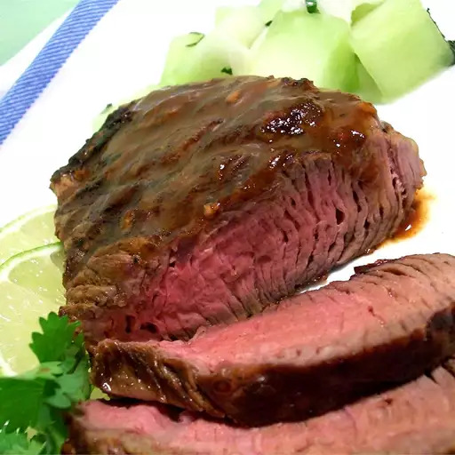

Adobo Sirloin

Description
Juicy adobo steak marinated in spicy chipotle chile sauce. Perfect for those who are looking to spice things up by trying other meats other than the traditional chicken.
Ingredients
- 1 medium lime, juiced
- 1 tablespoon minced garlic
- 1 teaspoon dried oregano
- 1 teaspoon ground cumin
- 2 tablespoons of finely chopped canned chipotle peppers in adobo sauce
- 2 tablespoons adobo sauce, or to taste
- 4 (8 ounce) beef sirloin steaks
- Salt and pepper, or to taste
Steps
- Whisk lime juice, garlic, oregano, and cumin together in a small bowl. Stir in adobo peppers and adobo sauce.
- Pierce steaks on both sides with a sharp knife; sprinkle with salt and pepper. Place steaks into a glass baking dish. Pour adobo marinade over top; turn steaks until well coated. Cover the bowl with plastic wrap and marinate in the refrigerator for 1 to 2 hours.
- When ready to cook, preheat an outdoor grill for high heat and lightly oil the grate.
- Remove steaks from marinade and shake off excess. Discard remaining marinade.
- Grill steaks on the preheated grill for 6 minutes per side, or to desired doneness. An instant-read thermometer inserted into the center should read 140 degrees F (60 degrees C) for medium.
Home